UNIT 19 · VOCABULARY
尺寸與測量
Sizes & measurements
40 個單字聽・唸・用
本單元單字一覽
長度、重量的單位，形狀，描述大小的形容詞和數量的說法，共 40 個字。注意相反詞、a dozen eggs、a pair of 這類量詞。
centimeterfootgraminchkilogrammilepoundcircledotlinepointrowshapesquareanglebigdeepfarhighlargelightlittlelonglowmediumshortsmallstraightwideroundbottlecupdozenglasspackpackagepairpiecesizeheight
每個字都有 🔊，先聽發音、跟著唸，再看例句。
單字 1–4

centimeter
公分n.
My brother is 160 centimeters tall.
我哥哥身高 160 公分。
我哥哥身高 160 公分。
📐
foot
呎（約 30 公分）；腳n.
The wall is ten feet high.
這面牆有十呎高。
這面牆有十呎高。

gram
公克n.
This letter weighs 20 grams.
這封信重 20 公克。
這封信重 20 公克。

inch
吋（約 2.5 公分）n.
My phone screen is six inches.
我的手機螢幕是六吋。
我的手機螢幕是六吋。
單字 5–8

kilogram
公斤n.
I weigh 45 kilograms.
我的體重是 45 公斤。
我的體重是 45 公斤。
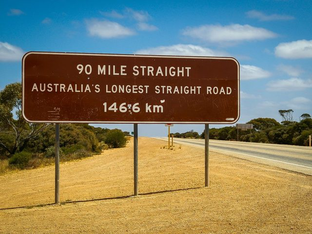
mile
哩（約 1.6 公里）n.
The beach is two miles away.
海灘在兩哩外。
海灘在兩哩外。
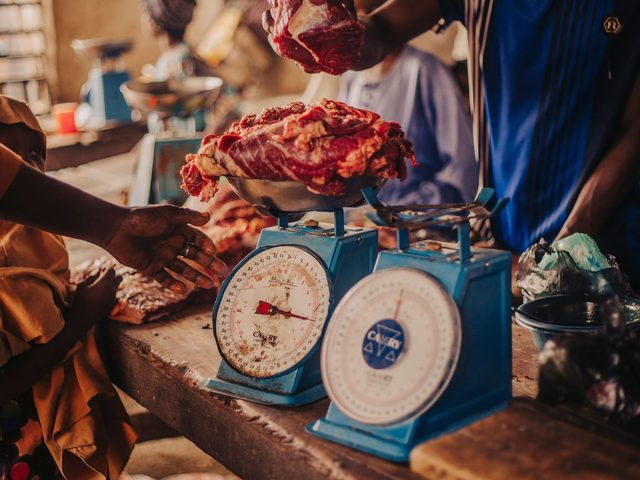
pound
磅（約 454 公克）；英鎊n.
This bag of rice weighs ten pounds.
這袋米重十磅。
這袋米重十磅。

circle
圓圈；圈起來n./v.
Let's sit in a circle.
我們圍成一圈坐下吧。
我們圍成一圈坐下吧。
單字 9–12

dot
小點；圓點n.
Her dress is red with white dots.
她的洋裝是紅底白點的。
她的洋裝是紅底白點的。

line
線；行；隊伍n.
Please stand in line.
請排隊。
請排隊。

point
點；要點；指n./v.
Don't point at people. It's not polite.
不要用手指著別人，不禮貌。
不要用手指著別人，不禮貌。

row
（一）排；（一）行n.
We sat in the first row.
我們坐在第一排。
我們坐在第一排。
單字 13–16
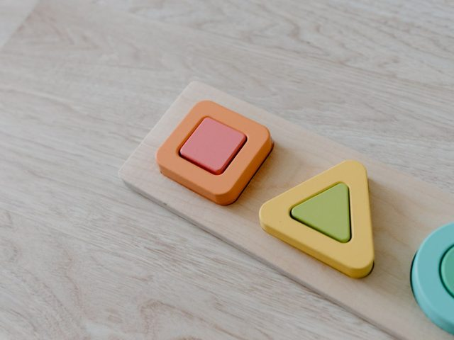
shape
形狀；外形n.
The cake is in the shape of a heart.
這個蛋糕是心形的。
這個蛋糕是心形的。

square
正方形；廣場；方的n./adj.
A square has four equal sides.
正方形有四個一樣長的邊。
正方形有四個一樣長的邊。

angle
角度；角n.
Try to take the photo from a different angle.
試著從不同的角度拍照。
試著從不同的角度拍照。

big
大的adj.
That's a big dog!
那是一隻好大的狗！
那是一隻好大的狗！
單字 17–20
deep
深的adj.
The lake is very deep.
這座湖很深。
這座湖很深。
far
遠的；遠地adj./adv.
My school is not far from my home.
我的學校離我家不遠。
我的學校離我家不遠。

high
高的adj.
The mountain is very high.
這座山很高。
這座山很高。

large
大的adj.
I'd like a large cola, please.
請給我一杯大杯可樂。
請給我一杯大杯可樂。
單字 21–24
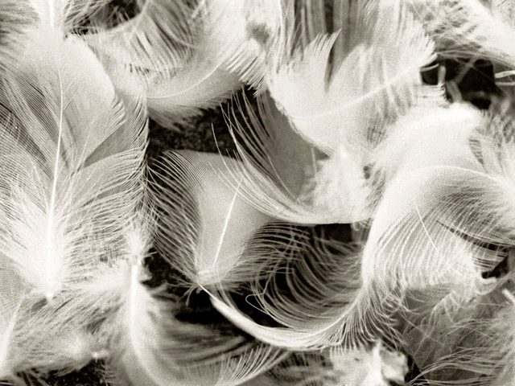
light
輕的；燈；光adj./n.
This box is light. I can carry it.
這個箱子很輕，我搬得動。
這個箱子很輕，我搬得動。

little
小的（常帶「可愛」的感覺）adj.
What a cute little puppy!
好可愛的小狗！
好可愛的小狗！

long
長的；久的adj.
This bridge is very long.
這座橋很長。
這座橋很長。
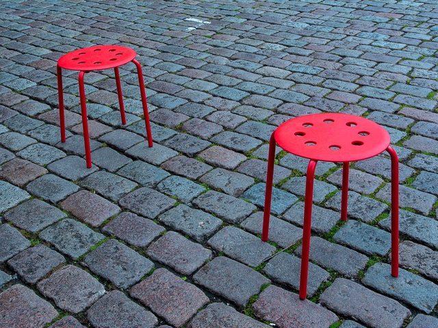
low
低的adj.
The chair is too low for me.
這張椅子對我來說太低了。
這張椅子對我來說太低了。
單字 25–28
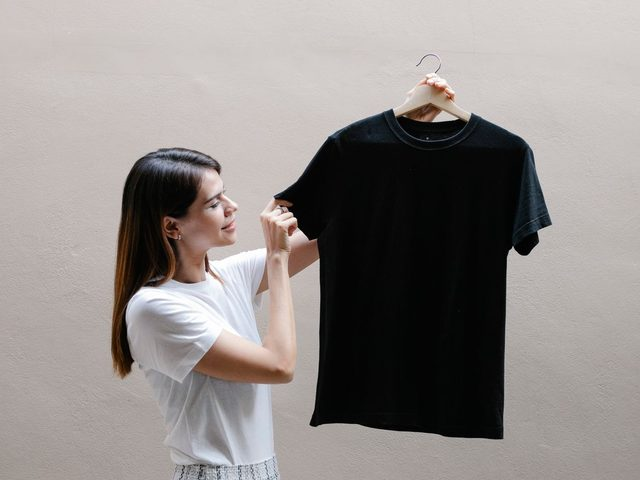
medium
中等的；中號的adj.
I'd like a medium T-shirt.
我要一件 M 號的 T 恤。
我要一件 M 號的 T 恤。
short
短的；矮的adj.
This pencil is too short to use.
這枝鉛筆太短了，不能用。
這枝鉛筆太短了，不能用。
🤏
small
小的adj.
This T-shirt is too small for me.
這件 T 恤我穿太小了。
這件 T 恤我穿太小了。
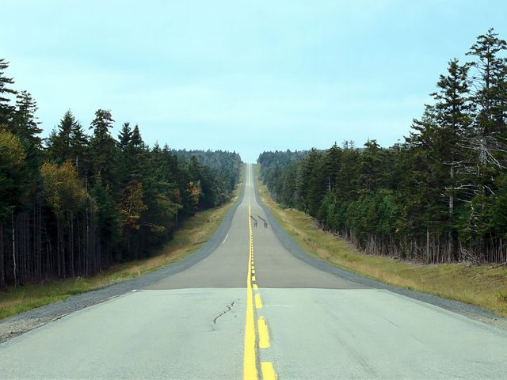
straight
直的；直直地adj./adv.
Draw a straight line.
畫一條直線。
畫一條直線。
單字 29–32

wide
寬的adj.
The road is very wide.
這條路很寬。
這條路很寬。
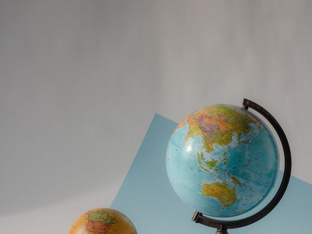
round
圓的；球形的adj.
The earth is round.
地球是圓的。
地球是圓的。
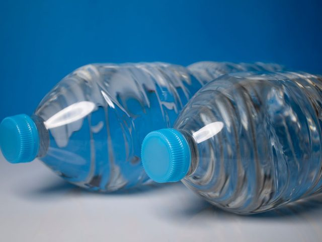
bottle
瓶子n.
Can I have a bottle of water?
可以給我一瓶水嗎？
可以給我一瓶水嗎？
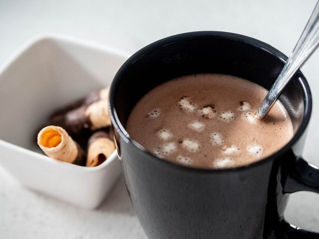
cup
杯子n.
Would you like a cup of hot chocolate?
你要來杯熱巧克力嗎？
你要來杯熱巧克力嗎？
單字 33–36
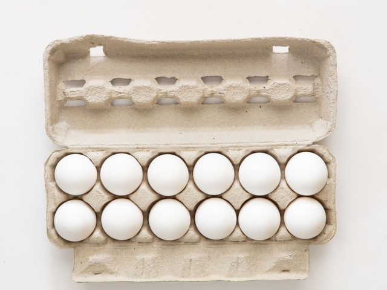
dozen
一打（12 個）n.
Mom bought a dozen eggs.
媽媽買了一打雞蛋。
媽媽買了一打雞蛋。
glass
玻璃杯；玻璃n.
She drinks a glass of milk every morning.
她每天早上喝一杯牛奶。
她每天早上喝一杯牛奶。
pack
打包；一包v./n.
Pack your bag tonight. We leave early tomorrow.
今晚把行李打包好，我們明天一早出發。
今晚把行李打包好，我們明天一早出發。
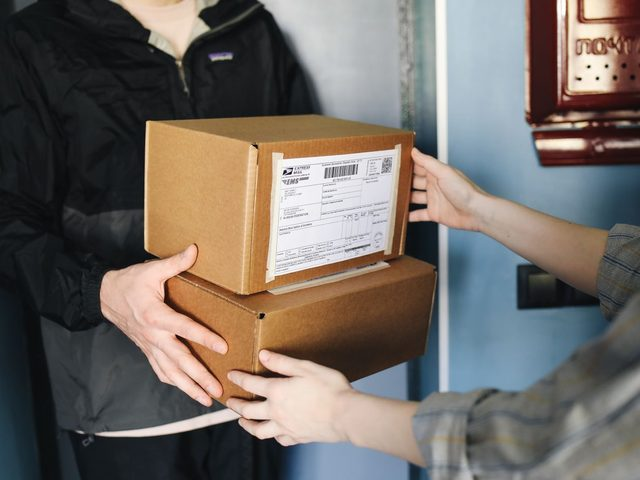
package
包裹n.
A package came for you today.
今天有你的包裹。
今天有你的包裹。
單字 37–40

pair
一雙；一對n.
I need a new pair of shoes.
我需要一雙新鞋。
我需要一雙新鞋。

piece
一張；一片；一塊n.
Can I have a piece of paper?
可以給我一張紙嗎？
可以給我一張紙嗎？
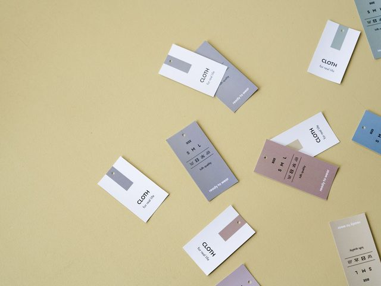
size
尺寸；大小n.
What size do you wear?
你穿幾號？
你穿幾號？
📏
height
高度；身高n.
The nurse checked my height and weight.
護理師量了我的身高和體重。
護理師量了我的身高和體重。
長度和重量的單位
| 單位 | 縮寫 | 大約等於 |
|---|---|---|
| centimeter 公分 | cm | 100 cm = 1 公尺 |
| inch 吋 | in. | 2.5 公分 |
| foot 呎（複數 feet） | ft | 12 吋，約 30 公分 |
| mile 哩 | mi | 約 1.6 公里 |
| gram 公克 | g | 1,000 g = 1 kg |
| kilogram 公斤 | kg | 1,000 公克 |
| pound 磅 | lb | 約 454 公克 |
台灣用公分、公斤；美國常用吋、呎、哩、磅。
相反詞和比較級
| 形容詞 | 相反詞 | 比較級 |
|---|---|---|
| big 大的 | small / little | bigger（重複 g） |
| long 長的 | short | longer |
| high 高的 | low | higher |
| wide 寬的 | narrow | wider |
| deep 深的 | shallow | deeper |
| light 輕的 | heavy | lighter |
| far 遠的 | near | farther |
little 也是「小的」，但常帶有「可愛」的感覺：a cute little puppy。
數量的說法
| 說法 | 中文 |
|---|---|
| a dozen eggs | 一打雞蛋（dozen 後面不加 of） |
| a pair of shoes / socks | 一雙鞋／襪子 |
| a piece of paper / cake | 一張紙／一塊蛋糕 |
| a bottle of water | 一瓶水 |
| a cup of tea / a glass of milk | 一杯茶／一杯牛奶 |
| What size do you wear? | 你穿幾號？ |
兩打是 two dozen eggs（dozen 不加 s）。
快問快答：中文 → 英文
1公分centimeter
2公克gram
3公斤kilogram
4磅（約 454 公克）；英鎊pound
5小點；圓點dot
6點；要點；指point
7形狀；外形shape
8角度；角angle
快問快答：英文 → 中文
1deep深的
2high高的
3light輕的；燈；光
4long長的；久的
5medium中等的；中號的
6small小的
7wide寬的
8bottle瓶子
學完了！接下來
複習方法
review
- 回到「📗 單字卡」，按「遮中文」自己考自己
- 再按「遮英文」，看中文說出英文
- 每個例句跟著 🔊 唸一次
準備好了
- 按右上角「📝 前往測驗」
- 測驗錯的題目要訂正到全對
- 訂正完成補送 1 點